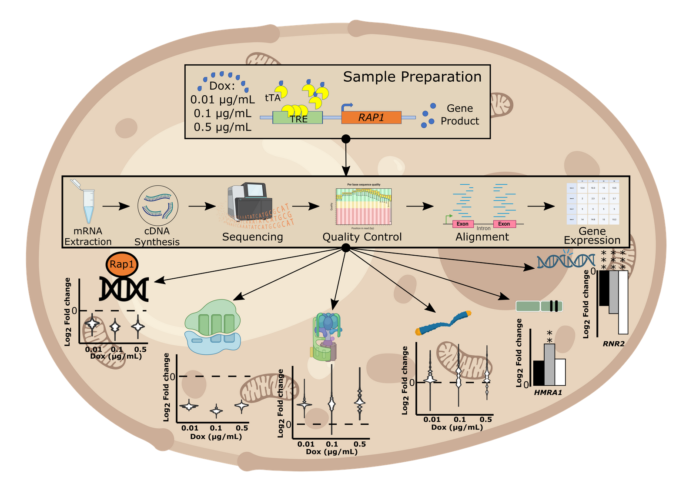

When the sequence-specific transcription factor (TF) binds to the cis-regulatory element of its target gene, it alters the expression level (activation or repression) of that gene. How this expression of a gene changes with changing the expression level of a TF is the prime focus of my study. This quantitative relationship between the TF-target gene is termed ‘gene regulatory function’ (GRF). By perturbing the expression levels of an essential and highly influential TF (Repressor Activator Protein 1) in Saccharomyces cerevisiae my study also focuses in identifying the genome wide gene expression changes occurring in the yeast transcriptional/regulatory network. I am utilizing a combination of machine learning (ML), deep learning (DL), and molecular techniques to model and understand GRF of RAP1, primarily to elucidate how TF binding region is affecting the expression level of the target genes.

cis-and trans-regulatory contributions to a hierarchy of factors influencing gene expression variation
https://doi.org/10.1038/s42003-024-07255-6
Siddhant Kalra, Stephen Lanno, Guadalupe Sanchez and Joseph D. Coolon
Searching for bacterial plastitrophs in modified Winogradsky columns
https://doi.org/10.3389/frmbi.2024.1303112
Fatai A. Olabemiwo , Claudia Kunney , Rachel Hsu , Chloe De Palo , Thaddeus Bashaw , Kendall Kraut , Savannah Ryan , Yuting Huang , Will Wallentin, Siddhant Kalra , Valerie Nazzaro and Frederick M. Cohan
Genome-wide gene expression responses to experimental manipulation of Saccharomyces cerevisiae repressor activator protein 1 (Rap1) expression level
https://doi.org/10.1016/j.ygeno.2023.110625
S. Kalra, R. Peyser, J. Ho, C. Babbin, N. Bohan, A. Cortes, J. Erley, M. Fatima, J. Flinn, E. Horwitz, R. Hsu, W. Lee, V. Lu, A. Narch, D. Navas, K. Okoroafor, E. Ouanemalay, S. Ross, F. Sowole, E. Specht and J.D. Coolon
MiR-330-5p and miR-1270 target essential components of RNA polymerase I transcription and exhibit a novel tumor suppressor role in lung adenocarcinoma
https://doi.org/10.1038/s41417-022-00544-4
Sheetanshu Saproo, Shashanka S Sarkar, Ekta Gupta, Sourav Chattopadhyay, Aarzoo Charaya, Siddhant Kalra, Gaurav Ahuja, and Srivatsava Naidu
EcTracker: Tracking and elucidating ectopic expression leveraging large-scale scRNA-seq studies
https://doi.org/10.1093/bib/bbab237
Vishakha Gautam, Aayushi Mittal, Siddhant Kalra, Sanjay Kumar Mohanty, Krishan Gupta, Komal Rani, Srivatsava Naidu, Tripti Mishra, Debarka Sengupta, and Gaurav Ahuja
Machine-OlF-Action: a unified framework for developing and interpreting machine-learning models for chemosensory research
https://doi.org/10.1093/bioinformatics/btaa1104
Anku Gupta, Mohit Choudhary, Sanjay Kumar Mohanty, Aayushi Mittal, Krishan Gupta, Aditya Arya, Suvendu Kumar, Nikhil Katyayan, Nilesh Kumar Dixit, Siddhant Kalra, Manshi Goel, Megha Sahni, Vrinda Singhal, Tripti Mishra, Debarka Sengupta, and Gaurav Ahuja
Challenges and possible solutions for decoding extranasal olfactory receptors
https://doi.org/10.1111/febs.15606
Siddhant Kalra, Aayushi Mittal, Manisha Bajoria, Tripti Mishra, Sidrah Maryam, Debarka Sengupta, and Gaurav Ahuja
The cellular basis of loss of smell in 2019-nCoV-infected individuals
https://doi.org/10.1093/bib/bbaa168
Krishan Gupta, Sanjay Kumar Mohanty, Aayushi Mittal, Siddhant Kalra, Suvendu Kumar, Tripti Mishra, Jatin Ahuja, Debarka Sengupta, and Gaurav Ahuja
Analysis of single-cell transcriptomes links enrichment of olfactory receptors with cancer cell differentiation status and prognosis
https://doi.org/10.1038/s42003-020-01232-5
Siddhant Kalra, Aayushi Mittal, Krishan Gupta, Vrinda Singhal, Anku Gupta, Tripti Mishra, Srivatsava Naidu, Debarka Sengupta, and Gaurav Ahuja
LEPStr: A database for Mycobacterium leprae short tandem repeats
https://doi.org/10.1016/j.imu.2020.100322
Partha Sarathi Mohanty, Dimple Saikia, Siddhant Kalra, Farah Naaz, Avi Kumar Bansal. Harpeet Singh Pawar, Keshar Kunja Mohanty, Sandeep Sharma, Manju Shukla, and Shripad A. Patil.
Modeling and Optimization of molecular biosystems to generate predictive models
https://doi.org/10.1007/978-3-030-02634-9_17
Ankush Bansal, Siddhant Kalra, Babajan Banaganapalli, and Tiratha Raj Singh
Structural bioinformatics and big data analytics: a mini review
https://doi.org/10.34040/IJCB.6.1.2017.86
Pulkit Anupam Srivastava, Siddhant Kalra, and Raghu Yennamalli
Computational tools and resources for CRISPR/Cas9 genome editing method:a mini review
https://doi.org/10.15406/mojpb.2017.05.00164
Ragothaman M Yennmalli, Siddhant Kalra, Pulkit Anupam Srivastava, and Vijay Kumar Garlapati
Watch these videos to learn some basics of C programming language.
Click here for complete playlist